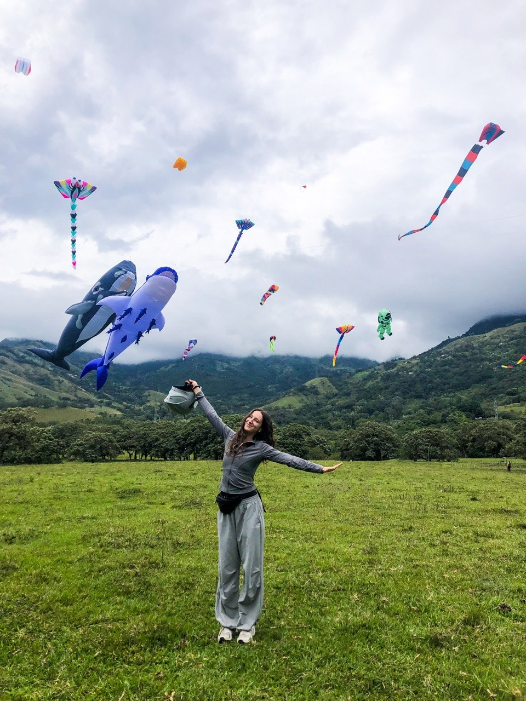

Как живётся в Колумбии стипендиату?
Я живу и учусь здесь по стипендии ICETEX. Ниже то, что стоит знать до переезда, в том числе о том, чего многие боятся:
о жилье и безопасности.

assets/img/life-1.jpg
assets/img/life-2.jpg
Больше о жизни в Колумбии в моём блоге
Видео про культуру, привычки, обычаи, культурный шок, природу, еду и транспорт в Колумбии и Медельине.
Смотреть блогДеньги
Пособие выплачивается раз в квартал, уже после его окончания, поэтому на старте нужен запас. ICETEX просит иметь деньги минимум на 3 месяца, из расчёта минимум 700 долларов в месяц. Первая выплата приходит после того, как вы оформили ID-карту иностранца, открыли счёт и отправили документы.
Мои расходы по статьям
В среднем за месяц в Медельине
| Статья | В месяц, песо |
|---|---|
| Комната в аренду | 1 300 000 |
| Еда | 1 600 000 |
| Транспорт: метро, автобусы, такси | 300 000 |
| Личное: покупки домой и развлечения | 300 000 |
| Итого | 3 500 000 |
В долларах это около 1 200 в месяц при курсе 3 100 песо за доллар. Курс меняется, поэтому на свои расчёты лучше смотреть перед отъездом.
Как я привожу деньги?
Рубли меняют на доллары, доллары везут в Колумбию и уже здесь меняют их на песо. Пособие 3 501 810 песо по такому курсу это около 1 130 долларов, а минимум 700 долларов в месяц, которые просит иметь ICETEX, это около 2 170 000 песо. Пособие пересматривается каждый год, поэтому на первые месяцы нужен запас, а свои деньги лишними не будут.
Где жить?
Жильё стипендиаты обычно ищут ещё до приезда, и вариантов несколько.
- Многие университеты присылают иностранным студентам список жилья с контактами арендодателей.
- Кроме списка от университета есть сайты с объявлениями об аренде, а у некоторых университетов есть общежития.
- Комната в квартире с соседями обычно дешевле, чем отдельная квартира. В Медельине комната стоит около 1 300 000 песо в месяц, как в моих расходах выше.
- Когда снимают комнату, интернет и коммунальные услуги зачастую уже входят в стоимость, но это стоит уточнить.
- Первые недели бывает непросто привыкнуть: новая страна, язык, документы. Поэтому жильё на первое время лучше согласовать заранее.
- Район можно оценить по безопасности и расстоянию до университета, а ориентиром служит страта: у каждого дома в Колумбии она от 1 до 6, и чем она выше, тем район обычно благополучнее и дороже. Страту указывают в объявлениях об аренде, а по адресу её можно найти в интернете.